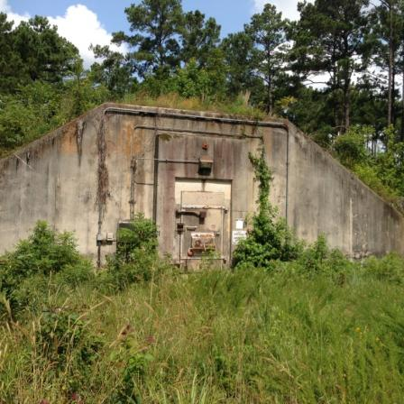
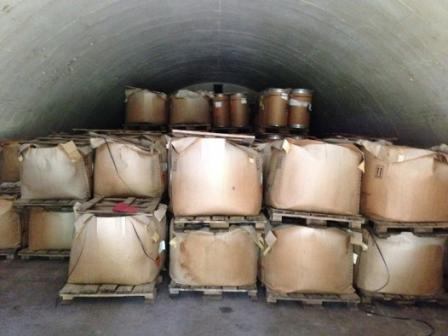

Camp Minden
On this page
UPDATE: EXPLO SYSTEMS, INC., CAMP MINDEN, LA
January 5, 2017
On January 1, 2017, the Louisiana Military Department (LMD) contractor, Explosive Service International Inc. (ESI) completed the disposal of 11 million pounds of M6 (approximately 68.8%) successfully out of the originally estimated 15,678,247 pounds of M6. ESI projects completion of the remainder of M6 to be in May of 2017 pending no unforeseen delays. The next quarterly air sampling is scheduled for this month.
Site Background

In 2012, an explosion occurred at the Explo Systems, Inc. operations within Camp Minden. The Louisiana State Police, the primary emergency response authority in Louisiana, responded and discovered large quantities of explosive and propellant materials improperly stored at Camp Minden. The Louisiana State Police immediately ordered Explo Systems, Inc. to store materials providing protection from the weather (heat, rain, cold) conditions. Weather conditions have a direct impact on the stabilizer used in explosives and propellants, and cause the stabilizer to deteriorate.
After completing the relocation of materials into enclosed structures (buildings and bunkers) within Camp Minden, Explo Systems, Inc. filed bankruptcy and abandoned the materials in August 2013. The Louisiana National Guard (Military Department) took ownership of the abandoned materials located on their property (Camp Minden).
In January 2014, EPA signed Administrative Order on Consent (AOC) with General Dynamics Ordinance and Tactical Systems, Inc (to include St Marks) and Alliant Tech Systems, Inc (now Orbital ATK, Inc.) to conduct a CERCLA removal action for about 3 million pounds (3,070,809 pounds) of explosive materials associated with previous ownership. Field operations were completed in August 2015. Of the 3,070,809 pounds of material, approximately 2,104,161 pounds were recycled.
In April 2014, EPA signed Administrative Order on Consent (AOC) with Hercules, Inc. to conduct a CERCLA removal action for about 3 million pounds of materials associated with previous ownership. Fields operations were completed in December 2014.
On October 28, 2014, a CERCLA settlement agreement negotiated by Department of Justice was signed by EPA, LDEQ, Louisiana National Guard and Department of Army. The agreement was effective on November 4, 2015. On March 18, 2016, EPA issued a modification of the CERCLA Time-Critical Removal Action memorandum for Camp Minden. The amended action memo allowed alternative technologies to be considered in disposing of material abandoned by Explo and left deteriorating at the site.
Camp Minden is almost 15,000 acres in size and located mostly in Webster Parish, Louisiana. The facility was formerly known as the Louisiana Military Ammunition Plant, which is a National Priorities List Superfund site primarily because of problems caused by groundwater contamination, remediation is on-going.
The State of Louisiana entered into a contract with Explosive Service International (ESI) on June 17, 2015, to conduct the destruction of approximately 15,687,247 pounds of M6 propellant and approximately 320,890 pounds of Clean Burning Igniter (CBI) currently stored at Camp Minden, in Minden.
The initial contract was for $19,292,648 and may be increased to approximately $34-$35 million dollars. This is based on receipt of additional funding that comes from the U.S. Treasury's Judgment Fund on behalf of the U.S. Army for the work.
Concurrently, ESI was issued a Notice to Commence Work for the contract from the Office of State Procurement.
The LMD and ESI held several community meetings where ESI discussed the destruction process. More information will be provided as soon as possible.
The EPA, in accordance with provisions of the Camp Minden Administrative Order, notified the Louisiana Military Department (LMD) that the Agency will not exercise its right to disapprove any or all contractors and/or subcontractors outlined in the states April 14, 2014 recommendation for the alternative disposal of materials at Camp Minden. EPA continues to support an alternative technology for disposal and is quickly working to conclude efforts necessary in helping the state finalize its plans.
LMD recommended Explosive Service International (ESI) and their Contained Burn method of disposal be utilized for the disposal of the 15 million pounds of M6 Propellant and 320,000 pounds Clean Burning Igniter (CBI). The recommendation includes accepting the advanced air pollution control options to maximize safety and flexibility in handling the rapidly decomposing materials and deteriorating storage and packaging materials. The EPA completed an extensive review of the state's recommendation with the safety of the public as our most important consideration.
June 30, 2015, Community Meeting Presentation by LMD Contractors (PDF)(41 pp, 2 MB, About PDF)
Final Camp Minden ARAR Letter (PDF) (23 pp, 783 K, About PDF)
May 8, EPA Response to LMD (PDF) (2 pp, 500 K, About PDF)
EPA Letter – Enclosure, Technology Comments (PDF) (2 pp, 95K, About PDF)
EPA Review of Recommendation using Dialogue Committee Attributes (PDF) (1 pp, 15 K, About PDF)
Attachment 1 Attributes Comparison (PDF) (2 pp, 71 K, About PDF)
Attachment 2 – Attributes Efficiency (PDF)(1 pp, 464 K, About PDF)
Summary of Technology (PDF)(2 pp, 113 K, About PDF)
April 14, LMD Recommendation to EPA (PDF) (2 pp, 59 K, About PDF)
LMD Letter – Enclosure 2 Key Personnel (PDF)(10 pp, 153 K, About PDF)
LMD Letter – Enclosure 3 Relevant Projects (PDF) (8 pp, 788 K, About PDF)
LMD Letter – Enclosure 4 Relevant Projects (PDF)(19 pp, 2 MB, About PDF)
LMD Letter – Enclosure 5 Key Advantages (PDF) (2 pp, 34 K, About PDF)
LMD Letter - Enclosure 6 Pricing (PDF)(2 pp, 81 K, About PDF)
On March 18, 2016, EPA signed an amended action memo that allowed alternative technologies to be considered in disposing of the materials at the site. The amendment cleared the way for the Louisiana Military Department to review quotes for alternative methods and select a company to dispose of the M6 and CBI.
Action Memorandum Time-Critical Removal for M6 and CBI – Amended (3/18/2015) (PDF)(23 pp, 1 K, About PDF)
Earlier in March 2016, the Dialogue Committee participant's input regarding key attributes to a successful cleanup and identification of technologies that show promise for addressing the problem at Camp Minden were released in a public report. The report was the result of a tremendous commitment by the community to seek alternative solutions to address the materials at Camp Minden. It represented the culmination of endless hours of work, tireless study and research, and the incredible understanding and knowledge of the participants.
A Community Advisory Group (CAG) has been established and is holding meetings to share information about the cleanup at the site.
EPA Letter to Ron Hagar, Chairperson of Camp Minden Community Advisory Group (PDF)(1 pg, 226 K)
As work continues by LMD to complete contracting requirements for an alternative technology to dispose of material at Camp Minden, we are continuing to develop the necessary plans to support the state's efforts. Last month, EPA sought public feedback on the draft baseline sampling plan and the final plan is available. Sampling field activities began this week and will continue for 5 to 6 weeks.
On May 22, 2015, LMD officially requested written assurance from the Department of Justice and the Army that the Army would fund the alternative method of disposal.
LMD letter to US DOJ, May 22, 2015 (PDF) (2 pp, 807 K, About PDF)
On May 28, 2015 the US Department of Justice provided LMD written assurance to pay 100% of cost for on-site destruction of materials using a contained-burn system.
US DOJ letter to LMD, May 28, 2015 (PDF) (2 pp, 131 K, About PDF)
On May 28, 2015 EPA, LMD, LDEQ and Army representatives participated in a community meeting at the Doyline Baptist Church to provide an update and answer questions. A copy of the presentation is available on the Reference Documents webpage. The next community meeting is scheduled for June 11, 2015 at the Minden High School.
On April 9, EPA held the first in a series of educational workshops in the community on environmental sampling and monitoring. On April 23, EPA hosted another educational workshop on preparedness. A copy of the workshop materials is available on the Reference Documents webpage. Additional workshops are being planned at the request of participants.
On March 24, 2015 EPA released the latest Department of Army technical assistance visit (TAV) report to the public. The visit was requested by Louisiana Military Department (LMD) after discovering condensation inside one of the magazines storing materials at Camp Minden. The assistance visit of the Clean Burning Igniters (CBI) and M6 propellant was completed from March 9 to 11, 2015. On Friday, March 20, 2015, EPA and LMD received a copy of the TAV report. A copy of the full March report is available. EPA worked closely with LMD to address the recommendations by Department of Army to secure the material stored in magazines and reduce exposure to moisture. EPA also directed the offsite disposal of the nitrocellulose container. EPA and LMD will closely monitor on-site conditions and request additional technical assistance from Department of Army as needed.
EPA recognized that the legal negotiations that led to the previous remedy approach and to the Administrative Settlement Agreement between Louisiana National Guard, Louisiana Department of Environmental Quality, EPA and the Department of Army did not provide the opportunity for public comment. A Dialogue Committee made up of citizens, community leaders, local representatives and state officials was established to review alternatives.
On March 13, 2015 the Camp Minden Dialogue Facilitator's Report was released and is available.
-
January 26, 2015 - Letter to EPA from Community Leaders (PDF) (6 pp, 297 K, About PDF)
-
January 28, 2015 - Response Letter from EPA to Community Leaders (PDF) (2 pp, 34 K, About PDF)
-
January 28, 2015 - Letter to Louisiana Representative Gene Reynolds (PDF) (2 pp, 33 K, About PDF)
-
January 29, 2015 – LDEQ and Louisiana National Guard Letter to EPA (PDF) (2 pp, 218 K, About PDF)
-
February 10, 2015 Louisiana National Guard letter to EPA (PDF) (2 pp, 90 K, About PDF)
-
Administrative Settlement Agreement and Order on Consent for Removal Action Regarding Hercules Inc. (PDF) (54 pp, 4 M, About PDF)
-
Administrative Settlement Agreement and Order on Consent for Removal Action Regarding General Dynamics Ordnance and Tactical Systems, Inc., and Alliant Techsystems Inc. (PDF) (54 pp, 12 M, About PDF)
General Dynamics and Alliant Techsystems, and Hercules, Inc. signed Agreements with the EPA to remove and dispose of some 3 million pounds of assorted explosives material. General Dynamics and Alliant Techsystems began the removal of explosives from the site in April 2014 and completed removal actions in August 2015. Hercules, Inc. completed the removal of 661,000 pounds of nitrocellulose in December 2014. The explosives were packaged and loaded in accordance with U.S. Department of Transportation regulations.
Administrative Settlement Agreement and Order on Consent for Removal Action Regarding Hercules Inc. (PDF) (54 pp, 4 M, About PDF)
Administrative Settlement Agreement and Order on Consent for Removal Action Regarding General Dynamics Ordnance and Tactical Systems, Inc., and Alliant Techsystems Inc. (PDF) (54 pp, 12 M, About PDF)
Clean Burning Ignitor (CBI)
On September 29, 2016 at approximately 0500 hours Bunker 2419 containing approximately 120,960 pounds of Clean Burning Igniter (CBI) auto ignited destroying the bunker. EPA, LSP, ESI, LMD, LDEQ, Webster and Bossier Parrish Sheriff’s Offices, ATF, FBI, and Bossier Parrish Fire District #1 all responded to the incident. EOD support was requested, and on September 30, 2016 the 705th Explosive Ordnance Disposal (EOD) Team arrived on-site to destroy the remaining CBI that was not consumed during the initial auto ignition.
On October 4, 2016, LMD requested the assistance of the Army Technical Assistance Visit to assess three additional bunkers (505, 2432 and 2471) which contained 820 pounds of CBI, 114,336 pounds of CBI and 85,594 pounds of CBI and 40,349 pounds of M6 Propellant, respectively. Based on the Technical Assistance Visit assessment of the two bunkers a recommendation for immediate in-place disposal be conducted by EOD.
On October 27, 2016 EOD arrived at Camp Minden and conducted preliminary assessments of all three locations. On October 28, 2016 EOD conducted a burn of the 820 pounds of CBI stored in Bunker 505. The burn was conducted remotely in two burn trays. EPA conducted perimeter air monitoring (particulates, VOCs, and Cyanide) and sampling at 4 locations surrounding the burn area. EPA utilized the Trace Atmosphere Gas Analyzer (TAGA) Bus to monitor for specific compounds of concern (diphenylamine). Air samples were collected and analyzed for SVOCs, Metals, Particulates, Cyanide, Dioxin/Furans.
On October 30, 2016, EOD performed a remote in-place disposal operations for Bunker 2432. EPA conducted perimeter air monitoring (particulates, VOCs, and Cyanide) and sampling at 4 locations surrounding the burn area. EPA utilized the Trace Atmosphere Gas Analyzer (TAGA) Bus to monitor for specific compounds of concern (diphenylamine). Air samples were collected and analyzed for SVOCs, Metals, Particulates, Cyanide, Dioxin/Furans.
On November 1, 2016, EOD performed a remote in-place disposal operation for Bunker 2471. EPA conducted perimeter air monitoring (particulates, VOCs, and Cyanide) and sampling at 4 locations surrounding the burn area. EPA utilized the Trace Atmosphere Gas Analyzer (TAGA) Bus to monitor for specific compounds of concern (diphenylamine). Air samples were collected and analyzed for SVOCs, Metals, Particulates, Cyanide, Dioxin/Furans.
On November 2, 2016, EOD performed a remote in-place disposal operation for approximately 1,500 pounds of CBI that had not been consumed during the Bunker 2471 CBI disposal operation. EPA utilized the Trace Atmosphere Gas Analyzer (TAGA) Bus to monitor for specific compounds of concern (diphenylamine).
EPA Air Monitoring and Sampling Property reports and the TAGA report will be posted to this website in the documents section as soon as they’ve been finalized. LMD provided 24 hour notice to the community prior to all four disposal in-place operations.
Current Actions

The Contained Burn System (CBS) was completed, and the initiation of the destruction of M6 began on April 13, 2016. After ramp up of the operation, a Comprehensive Performance Test (CPT) was conducted May 18 to 24, 2016. The semi-volatile organic compound (SVOC) and continuous emission monitor system (CEMS) relative accuracy test audit (RATA) expedited report was provided on June 9, 2016 and provided documentation that the CBS met the 99.99% Destruction and Removal Efficiency (DRE) for the three Principal Organic Hazardous Constituents (POHCs) tested, the proposed Operating Parameter Limits (OPLs), and the Quality Assurance (QA) requirements which included the RATA test, CEMS calibration, and drift test. EPA expedited the review of the expedited report and provided approval on June 13, 2016 for LMD and its contractor to resume full operations of the CBS to destroy M6 with condition 1 loading and established OPLs. Condition 1 is defined as neat M6 propellant void of any other material such as packaging, pallets, or debris.
ESI restarted the M6 destruction operation and has continued 24 hours a day and 7 days a week with minimal shutdowns due to maintenance and weather.
Future Actions
LMD’s contractor, ESI, continues the destruction of M6 propellant 24 hours a day and seven days a week. ESI projects completion of the destruction of M6 to be in May of 2017. Restoration of the site is estimated to take up to 90 days. Quarterly groundwater and air sampling will continue. Ambient air monitoring and sampling by ESI at the four stations around and in the community will continue. ESI will continue to conduct Continuous Emission Monitoring (CEM) at the Contained Burn System (CBS). ESI provides real time air monitoring results at their website (www.esicampminden.com).
EPA will continue to attend the monthly CMCAG meetings and provide workshops as needed. EPA continues to operate an air monitoring station at the support zone on Camp Minden and provides daily results in pdf format on this website in the documents section.
The safety of the public is our most important consideration.
Site Timeline
- October 2012 - A bunker explodes at the Explo site at Camp Minden.
- May 2013 - Explo secures all explosives under Louisiana State Police order.
- August 2013 – Explo abandons materials at Camp Minden.
- October 2013 – To protect the community, EPA begins negotiations with the potentially responsible parties (PRPs).
- April 2014 – Administrative Order of Consent (AOC) is signed with commercial PRPs.
- October 2014 – AOC signed with DOA, LDEQ, LMD to address M6 and CBI.
- December 2014 – Camp Minden Website goes live.
- December 2014 – Community Meeting
- January 2015 – Minden Dialogue Committee formed.
- February 2015 – 1st Alternative Remedy Meeting for Minden Dialogue Committee
- March 2015 – 2nd Alternative Remedy Meeting for Minden Dialogue Committee
- March 2015 – Minden Dialogue Process Facilitators’ Report released.
- April 2015 – Environmental Workshop #1, Air Monitoring
- April 2015 – Environmental Workshop #2, Response Preparedness
- May 2015 – Began collection of background environmental data.
- May 2015 – Public Announcement of alternative remedy and contractor.
- May 2015 – Citizens Advisory Group Meeting
- May 2015 – LMD began the best and final negotiations with Contractor.
- May 2015 – Public Meeting: Contained Burn System
- June 2015 – Contract Award
- June 2015 – Public Meeting
- July 2015 – Work Plan submitted to EPA.
- August 2015 – Environmental Workshop #3, Work Plan and Sampling Plan
- September 2015 – Environmental Workshop #4, LAAP Groundwater Discussion
- November 2015 - Environmental Workshop #5, Data Results
- December 2015 - Contained Burn Chamber (CBC) was transported from Oklahoma to the Site via roads and on a barge down the Arkansas River, Mississippi River, and up the Red River.
- April 2016 – First fire of the CBS was conducted on April 13, 2016, followed by a ramp up of the operation.
- May 2016 – Comprehensive Performance Test (CPT) was conducted May 18 to 24, 2016.
- June 2016 – ESI provided the expedited SVOC results to show DRE was met, OPLs, and QA. EPA conducted an expedited review and approved the operation to commence for Condition 1 (Neat M6 void of other materials, packaging, and debris) with established OPLs on June 13, 2016. The 24 hour and 7 day a week destruction of M6 commenced. Quarterly groundwater sampling was conducted on June 7, 2016.
- September 2016 – ESI conducted quarterly groundwater sampling.
- September 29, 2016 –120,960 pounds of CBI stored in magazine 2419 auto-ignited.
- October 2016 – ESI conducted quarterly emissions test.
- October 4-5, 2016 – Department of the Army technical assistance visit regarding the CBI auto-ignition; recommended in-place disposal of the CBI in magazines 505, 2432, and 2471. Unified Command requested EOD support and held meetings with the elected officials, the CAG, and then the community to brief on the situation and options. With 24 hour notice to the community before each of four disposal in-place events, the CBI remaining on Camp Minden was destroyed in-place by EOD.
- October 28, 2016 - 820 pounds were removed from magazine 505 and destroyed. Public notice was given 24 hours in advance. EPA conducted air monitoring and sampling to include air monitoring by the TAGA bus.
- October 30, 2016 – 114,336 pounds of CBI in magazine 2432 were disposed of in-place. Public notice was given 24 hours in advance. EPA conducted air monitoring and sampling to include air monitoring by the TAGA bus.
- November 1, 2016 – 85,594 pounds of CBI and 40,349 pounds of M6 in magazine 2471 were disposed of in-place. Public notice was given 24 hours in advance. EPA conducted air monitoring and sampling to include air monitoring by the TAGA bus.
- November 2, 2016 – Approximately 1,500 pounds of CBI that had not been consumed in the November 1 magazine 2471 event were disposed of in-place. Public notice was given 24 hours in advance. EPA conducted air monitoring to include air monitoring by the TAGA bus.
- December 2016 – ESI conducted quarterly groundwater sampling.
- January 2017 – ESI is conducting quarterly emissions test.